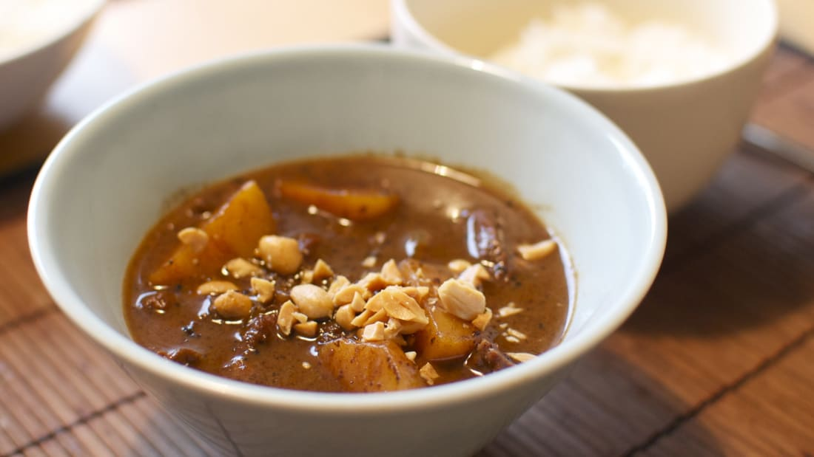
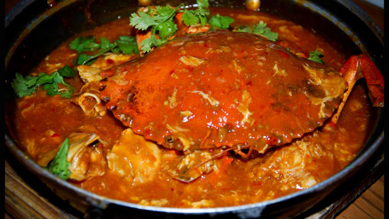

Massaman curry, Thailand

Emphatically the king of curries, and perhaps the king of all foods. Spicy, coconutty, sweet and savory.
Read
More
Neapolitan pizza, Italy
An invention now protected by its own trade association that insists on sea salt, high-grade wheat
flour.
Read
More
Sushi, Japan
it's how the fish and rice is put together that makes this a global first-date favorite.
Read
More
Butter garlic crab, India
From Butter Land, an imaginary best foods paradise balanced on the premise that anything tastes
great with melted butter.
Read
More
Fajitas, Mexico

Behold the meat sizzling on a fiery griddle. Step 2: Along with the meat, throw side servings of
capsicum, onion.
Read
More
Chili crab, Singapore

Spicy chili-tomato gravy tends to splatter, which is why you need to mop everything up with mini mantou
buns.
Read
More
Croissant, France
Flaky pastry smothered in butter, a pile of raspberry jam smeared over the top and a soft, giving bite
as you sink in your teeth.
Read
More
Arepas, Venezuela
A corn-dough patty that provides a savory canvas onto which you can paint any number of delicious
toppings.
Read
More
Donuts, United States

The delicious guilt of snacking on these addictive calorie bombs makes them taste even better.
Read
More
Hamburger, Germany

The bread-meat-salad combination is so good that entire countries have ravaged their eco-systems.
Read
More
Seafood paella, Spain
Shrimp, lobster, mussels and cuttlefish combine with white rice and various herbs, oil and salt in this
Valencian dish.
Read
More
Masala dosa, India

A crispy, rice-batter crepe encases a spicy mix of mashed potato, which is then dipped in coconut
chutney.
Read
More